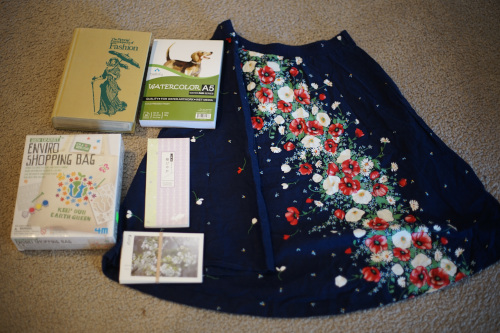

thrift store haul (not impressive)
April 14, 2021

- Pictorial Encyclopedia of Fashion $1.39
- a book with lots of pictures
- Watercolor pad $1.99
- i'm not sure i even own watercolor paints
- Shopping bag $1.99
- what should i paint on this bad boy?? i really hate those cheap plastic reusable bags. please use something more sturdy instead....
- Sakura postcards $.59
- i hope you are lucky enough to recieve one of these
- Bunny stationary pad $.59
- Skirt $.25
- way too big and the elastic in the waistband is h*cked but the print is so pretty
>